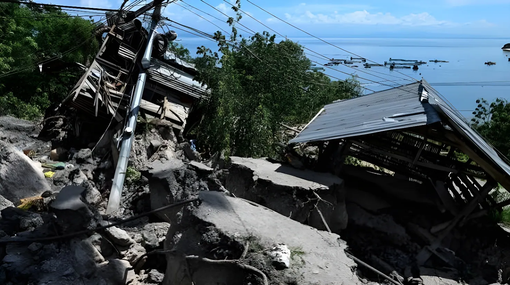

Le 8 juin 2026, à 7h37 du matin, heure locale, un séisme de magnitude 7,8 frappe le sud de Mindanao, la deuxième île la plus peuplée des Philippines. Jour de rentrée scolaire pour des millions d'élèves, la secousse — la plus puissante à toucher l'archipel depuis des années — fait au minimum 41 morts et près de 500 blessés, déplace plus de 20 000 personnes et déclenche une alerte au tsunami dans tout le Pacifique. La ville de General Santos, 700 000 habitants, subit les dégâts les plus visibles. Une catastrophe qui rappelle, une fois de plus, la vulnérabilité d'un pays assis sur la Ceinture de feu du Pacifique.
Il est 7h37 du matin à Mindanao. Des millions d'enfants viennent de franchir les portes de leurs établissements scolaires — c'est le premier jour de la nouvelle année scolaire aux Philippines. La terre se met à trembler. Le séisme, d'une magnitude de 7,8, secoue violemment le sud de l'île. Son épicentre est localisé à environ 32 kilomètres au sud-ouest de la commune de Maasim, dans la province de Sarangani, à 33 kilomètres de profondeur selon l'USGS (Institut américain de géophysique). L'Institut philippin de volcanologie et de sismologie (PHIVOLCS) qualifie la secousse de « majeure » et enregistre une intensité VII — dite « destructrice » — à General Santos City.
Les conséquences immédiates sont dévastatrices. Plusieurs bâtiments s'effondrent à General Santos, ville côtière dynamique de plus de 700 000 habitants qui constitue le principal pôle économique du sud de Mindanao. L'aéroport international de General Santos est fermé d'urgence, entraînant l'annulation de 17 vols intérieurs. Des glissements de terrain sont signalés dans plusieurs zones rurales. Hôpitaux, écoles et habitations subissent des dommages structurels dans cinq régions de Mindanao. Au total, selon le ministère des Affaires sociales (DSWD), 145 693 personnes — soit 32 926 familles — sont affectées par le séisme au 9 juin. Environ 10 000 familles sont évacuées dans les provinces de Sarangani et de Sultan Kudarat.
Dans les minutes qui suivent la secousse principale, le Centre d'alerte aux tsunamis du Pacifique (PTWC), basé à Hawaï, émet une alerte pour les côtes des Philippines, de l'Indonésie, de Taïwan et jusqu'au Japon. L'Agence météorologique japonaise (JMA) diffuse un avis de tsunami le long de sa côte Pacifique, des îles d'Okinawa jusqu'à l'est de Tokyo. En Indonésie, l'agence de gestion des catastrophes ordonne l'évacuation de plusieurs zones dans le nord des Célèbes. Des milliers de familles fuient les zones côtières des provinces de Sarangani et de Sultan Kudarat.
Les vagues effectives, mesurées sur les côtes philippines, atteignent jusqu'à 1,4 mètre au-dessus du niveau de la marée — significatives, mais en deçà des scénarios les plus redoutés. Des dégâts liés au tsunami sont signalés dans un village côtier, où six cabanes sur pilotis sont détruites. De plus petites vagues atteignent les côtes de l'Indonésie, des Palaos et jusqu'au sud du Japon. Cinq heures après le séisme principal, le PTWC lève l'alerte tsunami : la menace régionale est en grande partie écartée. Mais le séisme est suivi de plus d'une dizaine de répliques, dont deux dépassant magnitude 6, entretenant la panique dans une population traumatisée.
Séisme de magnitude 7,8 au large de Mindanao, province de Sarangani. Effondrement de bâtiments à General Santos City, qui est le premier jour de rentrée scolaire pour des millions d'élèves.
Le PTWC émet une alerte tsunami pour les Philippines, l'Indonésie, Taïwan et le Japon. Évacuations massives des zones côtières. L'aéroport de General Santos ferme ses portes.
Vagues de 1 à 1,4 mètre mesurées sur les côtes. Dégâts limités liés au tsunami (cabanes côtières). Premières répliques de forte magnitude ressenties.
Le PTWC lève l'alerte tsunami. Ferdinand Marcos Jr. dépêche des responsables de la gestion des risques sur place et suspend les cours dans les zones affectées.
Le bilan monte à au moins 37 morts et 456 blessés (Office de la Défense Civile). Le DSWD recense 145 693 personnes affectées. General Santos City est placée en état de calamité.
Le bilan final s'établit à au moins 41 morts (Euronews). Les opérations de recherche se poursuivent dans les bâtiments effondrés. L'aide humanitaire s'organise sous supervision présidentielle.
General Santos City, connue localement sous le nom de « GenSan », concentre les dégâts les plus spectaculaires. Cette ville portuaire de plus de 700 000 habitants, premier port thonier d'Asie du Sud-Est, subit l'effondrement de plusieurs bâtiments commerciaux et résidentiels. Des images diffusées par l'agence AFP montrent notamment l'effondrement d'un restaurant Jollibee — enseigne de restauration rapide philippine omniprésente — symbole de la brutalité aléatoire d'un séisme qui ne distingue pas les structures. Des infrastructures clés — ponts, routes, réseaux d'eau et d'électricité — subissent des dommages importants. La ville est placée en état de calamité par les autorités.
L'impact sur le système éducatif est particulièrement saisissant. Selon World Vision, environ 3,2 millions d'élèves, plus de 128 000 personnels éducatifs et plus de 6 200 écoles publiques réparties sur cinq régions de Mindanao ont été directement touchés. De nombreux établissements présentent des dommages structurels. Les cours restent suspendus dans plusieurs zones affectées pour permettre des évaluations de sécurité.
« Le pays se mobilise et nous n'abandonnerons pas Mindanao. »
— Ferdinand Marcos Jr., président des Philippines, 8 juin 2026Teresito Bacolcol, directeur du PHIVOLCS, précise que le séisme du 8 juin 2026 est provoqué par un mouvement le long de la Fosse de Cotabato, une structure de subduction qui longe le sud de Mindanao. Il s'agit du séisme le plus puissant à avoir été généré par cette fosse depuis le 17 août 1976, lorsqu'une secousse de magnitude 8,1, accompagnée d'un tsunami aux vagues de 8 à 10 mètres, avait tué environ 8 000 personnes dans plusieurs provinces et villes côtières du sud des Philippines. Un autre séisme de magnitude 7,8, en 1990, avait fait plus de 1 000 morts dans le nord du pays.
Les Philippines se situent à l'intersection de plusieurs plaques tectoniques majeures — Philippine Sea, Eurasie, Pacifique — et appartiennent à la Ceinture de feu du Pacifique, zone de convergence de la quasi-totalité de l'activité sismique et volcanique mondiale. L'archipel enregistre quotidiennement des tremblements de terre, dont la plupart sont imperceptibles. Mais la répétition des événements majeurs illustre une réalité structurelle : le sous-sol philippin est en perpétuel mouvement, et les grandes villes de Mindanao demeurent exposées à des risques sismiques et tsunamigéniques de premier ordre.
| Zone | Dégâts principaux | Personnes évacuées |
|---|---|---|
| General Santos City | Bâtiments effondrés, aéroport fermé | Milliers (état de calamité) |
| Province de Sarangani | Habitations, infrastructures, tsunami 1,4 m | ~10 000 familles |
| Province de Sultan Kudarat | Glissements de terrain, habitations | Milliers |
| Davao Occidental | 3 morts, habitations endommagées | Plusieurs centaines |
| Région Soccsksargen | 12 morts, infrastructures scolaires | Important (5 régions) |
Le séisme du 8 juin 2026 n'est pas une surprise dans sa nature : les géologues savent depuis des décennies que la Fosse de Cotabato est capable de générer des événements de magnitude 8 et au-delà. Ce qui change, en revanche, c'est la densité humaine des zones exposées, l'extension du bâti fragile, et la complexité croissante des chaînes d'alerte régionales. Le bilan — au moins 41 morts pour un séisme de cette magnitude — reflète à la fois les progrès réels des systèmes d'évacuation philippins et les limites d'une résilience encore incomplète. Pour Mindanao, où pauvreté, conflits anciens et catastrophes naturelles se superposent, chaque séisme majeur est une épreuve de plus dans une histoire déjà chargée.